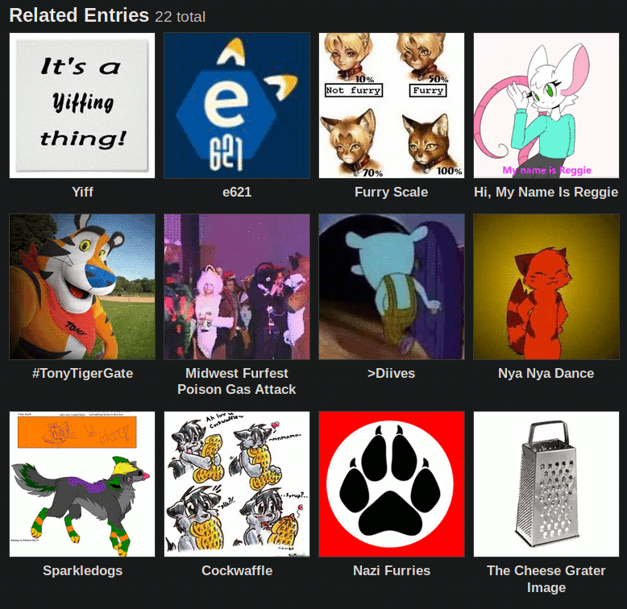

Hangover Archives: 2019–11
POOF
Something has started today.
Where did it go? What you want it to be?
Well you know, November has come.
To dump cum in your mum’s pump-a-rump.
This little bit of copyright-violating thievery of a corporation’s lyrics has now been protected under the auspices of Canadian parody law, because capitalism not only desires totalitarian control over your property, but also the control of your thoughts and cultural expression. But it really is November, isn’t it? Kinda quirky, doe. First it’s October, then it’s — whoa! Here we go again!
What a dismal month this is. It’s the filler month between two holiday seasons that are full of fun and festivity and teeth-rotting treats and only the occasional crack-laced roach to drop into the kiddies’ buckets and teach them the mysteries of overdosing on Mary Jane. On October 31 you go to bed off candy dreams and chocolate nightmares, and on November 01 you wake up in Walmart with all the huge boxes of finger-sized Snickers at a deep dish discount and with your childhood dreams slashed greater than Walmart’s low, low prices on everyday goods. Walmart: Save Money. Live Better®.
I had this whole article lined up and everything. But then I procrastinated for three days. It was about Magic: The Gathering. Yeah, that’s the type of high-quality content you all line up here to see, right? Except you don’t need to line up, because we’re on the Internet! Unless you’re at the lines at Walmart saving more money on — NO I AM NOT SHILLING FOR WALMART, I mean Walmart®. While I would be happy to accept blood money from the largest company in the whole fucking world, I get the feeling I don’t have the “clout”, the “influence”, the “street cred” or the “hip jiveness” to make a difference in whether or not you choose to shop at a company with more wealth than Saudi Arabian oil barons.
Damn. I gotta get me some of that oil money. My first step is to be born to an absurdly wealthy capitalist with unlimited political power and networking capability. Having already failed this meritocratic ideal, I will now create a dead-on-arrival startup company specialising in some trendy thing nobody understands but activates the trigger word in venture capitalists’ brains to throw millions upon millions of dollars at, as opposed to curing poverty or buying yourself a third or fourth helicopter. I will name my new company “Etherium Machine Learning”, whose main product will be teaching businesses the solution to P=NP. Here’s a hint: It’s zero.
This Hangover is too long now. I AM ENDING IT. POOF.
POOF 2
Oh, no. Do I really have to write a Hangover today? After writing over 1,500 words in an article just now? Can’t I just cheese it and copy-and-paste the Hangover from two days ago into this space?
Hmm. Now that’s a good idea…
Something has started today.
Where did it go? What you want it to be?
Well you know, November has come.
To dump cum in your mum’s pump-a-rump.
This little bit of copyright-violating thievery of a corporation’s lyrics has now been protected under the auspices of Canadian parody law, because capitalism not only desires totalitarian control over your property, but also the control of your thoughts and cultural expression. But it really is November, isn’t it? Kinda quirky, doe. First it’s October, then it’s — whoa! Here we go again!
What a dismal month this is. It’s the filler month between two holiday seasons that are full of fun and festivity and teeth-rotting treats and only the occasional crack-laced roach to drop into the kiddies’ buckets and teach them the mysteries of overdosing on Mary Jane. On October 31 you go to bed off candy dreams and chocolate nightmares, and on November 01 you wake up in Walmart with all the huge boxes of finger-sized Snickers at a deep dish discount and with your childhood dreams slashed greater than Walmart’s low, low prices on everyday goods. Walmart: Save Money. Live Better®.
I had this whole article lined up and everything. But then I procrastinated for three days. It was about Magic: The Gathering. Yeah, that’s the type of high-quality content you all line up here to see, right? Except you don’t need to line up, because we’re on the Internet! Unless you’re at the lines at Walmart saving more money on — NO I AM NOT SHILLING FOR WALMART, I mean Walmart®. While I would be happy to accept blood money from the largest company in the whole fucking world, I get the feeling I don’t have the “clout”, the “influence”, the “street cred” or the “hip jiveness” to make a difference in whether or not you choose to shop at a company with more wealth than Saudi Arabian oil barons.
Damn. I gotta get me some of that oil money. My first step is to be born to an absurdly wealthy capitalist with unlimited political power and networking capability. Having already failed this meritocratic ideal, I will now create a dead-on-arrival startup company specialising in some trendy thing nobody understands but activates the trigger word in venture capitalists’ brains to throw millions upon millions of dollars at, as opposed to curing poverty or buying yourself a third or fourth helicopter. I will name my new company “Etherium Machine Learning”, whose main product will be teaching businesses the solution to P=NP. Here’s a hint: It’s zero.
This Hangover is too long now. I AM ENDING IT. POOF. 2.
Normal Words, but a Horse Ska!
They stuck me. They jammed with me a needle. They stole my blood. THEY STOLE MY BLOOD.
Yeah, fuck all ya’ll losers, I just gave a donation. You idiots are spending money to get drunk and pissy for $9.99 a six-pack. Try getting a needle in your arm and watch as they drain you drop-by-drop. You’ll be shitfaced for the rest of your week.
I’m out here saving lives and shit, and you’re over here expecting me to give you the funnies? It should be you who amuses me. That’s right, I’m abandoning Frogesay now, and erecting a new enterprise: Yousay. What do you say? I don’t know, some dumb shit. I think there might be a website where anonymous dumb-dummies give banal opinions about media properties before breaking off into intense arguments over the most petty and inconsequential bullshit. It’s called 4flan, or smth.
Fuck it. Funny YouTube link of the day. It’s nightcore ska. 1000 GECS, BEST ALBUM EVAR!!!!!!!!!!!!!!!!!!!!!!!!!!!!1
THEY STOLE MY FUCKING BLOOD.
Moist Cookies
Booting into your PC after reinstalling your operating system is like existence itself: full of constant, tiny frustrations and with all your stuff going missing despite knowing the place where you keep your pens is exactly where your pens should be, even though the pens aren’t there anymore, and I’m talking about pens instead of anything else, such is the state of my psyche. Things that should be there ain’t and what ain’t there isn’t, and all that isn’t should be, and they really think that’s how it be but it ben’t.
I wrote an article about this topic ― not the pens, the other thing. It’s funny, like all my articles. It’s charming and witty and full of life and will make you want to live your life to greater heights that man hasn’t deigned to, as I bitch about Linux and make comments on granny porn. Bloody hell, I realise you old people are too afraid to kill yourselves and save us the burden of looking at you, but could you make an effort to be presentable? Put on some makeup? Wear a banana suit to hide the burden of your physical existence?
One of the things you hear about fitness is that old people tend to slow down with age. That’s true, but the way it’s phrased implies this is an inevitability rather than a function of laziness. Nobody thinks the old man who walks tall while flexing his killer biceps is ugly. They think the feeble old dude bent over with a cane and limbs like that kid on the playground named Myrtle is the ugly motherfucker. People are attracted to a combination of your strength, charisma, and consistency of personality. All of these can be developed, but the hardest is the strength.
I can’t find my citation for this, so let’s assume I’m not spitting complete fucking bullshit over here for the sake of cynically manipulating the lucrative audience of 70-year-old gay Linux furries. There was this article on the Art of Manliness ― which is a fantastic website because the authors will weave a Bayeux Tapestry of philosophical dissertations on the whole of male existence while teaching you how to shit in the woods ― which started off by comparing X-rays of two athlete’s legs: one thirty years old, and the other seventy years old. Barring minor differences, they were the same picture. The article went on to implore older men to consider the implications their lifestyle will have on their future health, and to understand they aren’t doomed to be as useless as their contemporaries surely will be.
So all you poor bastards attracted to sexy videos of foxy grandpas getting it on: you’re fucking sick. But you can also develop greater taste by jacking it to the attractive grandads, too. Now I’m going to stop talking about old man sex. Because this is all very silly.
Froge Honours our Veterans
I got this idea. I would have pimped out Frogesay like it was the personal webpage of a 60-year-old veteran with an America Online trial account and a Geocities page right before it was unceremoniously nuked by Yahoo in a bureaucratic act whose loss of culture is greater than the burning of the Library of Alexandria. Ah, yes, I love capitalism. I love it when incompetent businesses kill off their unprofitable products and damage the human race forever.
Yes, it would have been great. I would have put up the flag of the United States of America, announced all the virtues of the Armed Forces of the United States of America, and put up portraits of Jesus of the United States of America and claim that the United States of America was founded as the Christian United States of America, because ignorance is what the United States of America is founded on! Clearly I didn’t do that, so pretend I did. Create your own comedy! Make your own mirth! Assassinate the President of the United ― I mean a small banana republic in South America. Wait, don’t do that one. You’ll be executed. But then you’ll be a martyr and revelled in for a thousand years, so make your own decisions.
I don’t know what it is about the United States of the USA and their particularly heinous group of elderly uneducated bible thumpers stuck in a constant state of poverty and racism deciding to stand in solemn silence to remember the imperialist efforts that got them to the United States of American ideal of living in the first world with none of the benefits or privileges associated. Instead of rebelling against the uniquely United States of American system that oppresses them and prevents them from rising above the status of White trash, they instead choose to glorify it, because not being able to pay for little Bobby’s insulin shots to treat his type-two diabetes at the ripe old age of nine is what the United States of America is all about.
There’s this misconception regarding the United States of America coming in to kick Hitler’s ass and nuke the Japanese and commit all those war crimes and all the other happy happy joy joy surrounding the two World Wars, which are the only wars that matter. Yeah, fuck everyone who served in the Korean War. You didn’t do shit for your country. Of course, people who studied history would know that at the time the United States of Noninterventionism was a paranoid schizophrenic waiting for someone to bully them so they could bring two assault rifles and four knives into their university to espouse the virtues of the White race, except for the non-United States of American Whites, who are scum.
What is there to celebrate for all those young men and women who were forcibly drafted to mercilessly kill foreigners in a shithole country for no greater reward than a permanently damaged psyche and crimes against humanity they will never be able to recover from? Who are we honouring when we remember the United States of America’s failure to prevent the spread of Nazism abroad, causing their so-called allies in Europe to burden the weight of protecting their homeland while simultaneously fighting one of the most evil forces to ever fall on humankind? For what purpose do we promise to never forget the atrocities of war while the United States of America has invaded, and continues to invade, helpless countries in a continued state of conflict while glorifying all the pain and suffering you have and continue to cause?
Boy, would you look at that list of war crimes. Look at you, citizens of the United States of America. Look at everything you have to be proud of, all the terrorism at home and abroad, all 37,000 words documenting the daily deeds of an empire kept alive through sheer hatred for everyone who isn’t them ― and the documentation is the condensed version at that. Let you all remember your ancestors who indiscriminately persecuted or murdered anyone who they considered to be an “other”, a non-human, no matter whether they were your countrymen or fellow man who happened to live in another country. Let’s honour the veterans who have shown no honour.
God bless the United States of America. God bless your Christian nation. And may God cast down all those who protest the greatness of the United States of America, may He strike down the Blacks, the Gays, the Jews, the Trans, and all the Naturalised Citizens who became members of your fine country through sweat and tears, for those who work for privilege instead of being born into it are not fit to be a part of the United States of America.
Fuck your veterans. Fuck your holiday built on human misery. And fuck you for everything you’ve ever done to your own people, for violating your own constitution, and for building a country where your own citizens can’t even walk the streets of where they were born without fear of being murdered for who they are.
What a despicable fucking nation. Fuck the United States.
Increase the Decrease
I asked a friend of mine ― which I totally have, so take THAT, virgins ― an idea for what to update my blog. And wouldn’t you believe it, the dumb cunt said “contrast”. And they said it twice, for emphasis. They EMPHASISED ME. THEY EMPHASISED ME!!!! MEEEEEEEEEEE!!!!!!!!!!!!!!!!!!!!!!!!!!!
MEEEEEEEEEEEEEEEEEEEEEEEEEEEE YES THE JOKE IS THAT THE “ME” IS BEING INCREASINGLY EMPHASISED
So I’m obeying their wishes and putting my website in even higher contrast than usual. This will occur until I finally ransom those FUCKING FEET PICTURES. AND NOW I AM NO LONGER GOING TO ABUSE THE STRONG TAG!!!!!!!!!!!!!!!!!!!!!!
BECAUSE THAT WOULD BE SILLY
So now the site design is wack. The links are red and the background is white, unless you’re reading this from the future, in which case it’ll probably be black because we’re trying to be inclusive on this incredibly racist website. First I join the alt-right, then I say “fuck it” and say I’m Racist Now? DAMN. Now, putting my website design into 2001: A Space Odyssey mode won’t make me more popular amongst the disgusting fucking rightist scum ― I mean rightists who aren’t disgusting fucking scum ― and it won’t make me save the White race, because evidently it needs saving as opposed to being responsible for some of the greatest tragedies in all of human history. But my point remains: if I don’t get feet pictures, then I will go absolutely apeshit. And nobody wants to be an ape.
This design is only temporary, but the pain I will cause you is permanent. And, really, isn’t that the point of life? Pissing off everyone who likes you permanently for incredibly petty reasons? Now if you excuse me I am going to, uh, do nothing frankly. Honestly, this is usually the end sentence I use to sign off with a joke. But I have no jokes. Maybe that means I’m the joke.
DAMN. THAT’S VERY A INSIGHTFUL COMMENT, Froge. I CAN’T WAIT TO GROW UP TO BE AS INTELLIGENT AND ENTERTAINING AS YOU!
Thank you, me.
Nazis of the Queerbait
CHANDRA!!! IS!!! GAY!!! Well, bisexual really. Or is she pan? And who the fuck is Chandra? I’m glad you asked! Wait, I should put that in quotation marks, or else I would appear to be talking to myself. Which I am.
There’s this big controversy in the Magic: The Gathering fandom right now. Wait, wait, don’t leave. This isn’t completely fucking boring. There was this new novel that came out last week, and when it was reviewed by our patron saint That Dude Whose Name I Forgot on Tolarian Community College, shit hit the fucking fan. The community revolted, Twitter beef was started, the receipts were shared, employees aired out dirty laundry, God-Eternal Mark Rosewater asked for feedback to “pass along relevant e-mails” (AND I WROTE ONE, YOU’RE FUCKING WELCOME MARK) which created a “high feedback week”, and there were the all-important stanky dank maymays.
In simplest terms: the novel sucked harder than your mum in a wind tunnel, it retconned gigantic swarths of the Magic: The Gathering canon, it deleted Chandra’s (this woman) sexuality by claiming she was only into the “brawny and decidedly male types”, and the whole debacle is really tremendously embarrassingly awful for Wizards of the Coast. They insulted new fans by pretending the three-year relationship between Chandra and Nissa (that woman) never existed and was just a phase, they insulted old fans by breaking the fundamental rules of the canon that has existed since day one, they insulted queer fans by removing a pansexual hot mess main character from Magic lore, and they insulted all their other fans by doing this on top of ruining Standard by printing a broken card that sees play in fucking Vintage.
Come on. Nazis of the Coast? That name’s supposed to be ironic. It’s not gucci to pull an Old Adolf on us and genocide my queer queens. I hope someone, somewhere in the annals of Wizards gets to read my impassioned oratory on bisexual culture, and feel ashamed of themselves for participating in a chain of decisions that got my people erased yet again.
The Minorities Win Again
Oh, no. I just remembered that Justin Trudeau is being sworn in as Prime Minster on the 20th. There’s a lot to discuss about that, including the slight possibility that my fellow voters are scared little kittens who are afraid of external stimuli and so voted between a turd sandwich and a giant douche despite the existence of third-parties that ― and you will be amazed at what I’m saying here ― have actual seats in Parliament! I gave a reasoned reaction to the election results previously, but we as a country are facing the aftershocks, and my pussy is personally shooketh.
The 20th is a cursed day for me because that’s when Froghand was founded and is one of the tenner-days where I would post things on Kratzen that weren’t reviews, before having a nervous fucking breakdown and embarrassing myself in front of The Internet. Remember Kratzen? Damn, that was legit. Everything I do is legit, except for the old stuff, which is crap, including Kratzen, which was horrible.
S’anyway, one of the upsides to this atrocious election where two-thirds of the country voted for who gets to ruin things for 100% of everyone ― since this is how democracy works I guess ― is how it resulted in a minority government rather than a majority. The government isn’t run by minorities, which is what the NDP wanted, but it’s organised such that no one party can force through legislation arbitrarily and without oversight, because that is also how democracy works. This results in a system where nothing ever changes, as opposed to changing for the worse. This has far-reaching implications for the future of our country, which we’ll all forget about until five years from now when the Liberals fuck everything up and the Conservatives get back into office.
I will say that Project Gutenberg Canada was throwing a shindig over the election results, because this state of stagnation will mean the terrible, terrible USMCA agreement will never get passed. What’s bad about it? Nobody in their right mind would read all eleven squintillion pages to find out what the hell our country is being held hostage to at the hands of an orange fascist, which is why members of parliament tend to go crazy over time as the words and words of absolute utter nonsense invade their brains and make them ratify these blatnatly asymmetrical agreements.
The pressing issue that Project Gutenberg is celebrating the death of is the, ugh, “Intellectual Property” “Protections”, despite them not being intellectual, or property, or protective of anything other than government monopolies handed out like candy thus causing the wheels of the free market to crash into ten thousand caribou. USMCA, yes it’s really named that, would extend the copyright term of Canada to life plus 70 years, because all those starving authors will have their publishing cheques addressed to their gravestones five minutes after death, let alone seventy cunting years.
It’s not worth speculating the type of dank opium those 19th century Berne Convention dudes were smoking when they decided that fifty cunting years after someone’s death is a perfectly reasonable term for copyright terms. It just happened, because the human race is fucking doomed. We can’t even prevent our own extinction, let alone discuss something as banal as fucking copyright without losing our goddamn minds, going apeshit over the countertops, and throwing fat diarrhea dumps on freedom of speech and expression of culture for the next 130 years. I die when I’m 80 years old, it will be over one hundred years from now before these words become uncopyrightable in my home country.
I want to believe that even people who don’t want copyright law abolished will agree the length of these terms are absolutely insane and have no business belonging in a world where our downloading technology makes any notion of copyright law totally obsolete. There is no reason why entitled artists should have the option to allow their estate to troll for copyright suits for five decades after that artist’s death. And while fifty years after life is still absolutely, maddeningly, fucking, fucking, fucking insane, it’s even worse to add on twenty years after that, because all the artistic works that are finally entering the public domain after literal centuries will be suppressed and censored for yet another twenty years.
It’s easy to get mad about this. And it’s easy to celebrate the inevitable USMCA clusterfuck that’s going to occur when the unholy trilogy of four that is the Liberals, Conservatives, Bloc, and NDP (the Greens don’t matter) all have to negotiate what they want out of the bill in such a way as to please every member in every single party, meaning this legislation will likely never pass the House of Commons. But it is as I say. Our society is technologically advanced to the point where we can copy any materials at any time arbitrarily and manipulate our copies of those materials through any means we have given the time and imagination. Copyright is absolutely irrelevant to the vast, vast majority of human beings alive. It is impossible to legislate protocols, impossible to legislate mathematics, and we live in an age where digital law is easily ignored by anyone with an Internet connection and a whole shitload of hard drive.
Anyway, shit election, shit parliament, shit trade agreement, shit copyright law, and shit out of luck for anyone who tries to put their hands on the technological superiority of the Internet and all the means available to browse it in total privacy. At least we have Creative Commons. And at least we have me, who is more important that Creative Commons, so respect my authority!
Back to Arbitrary Normalcy
Okay, enough, ENOUGH of this silliness! No more white background! And no more Whites in general.
Sorry, I just realised I can’t talk about colours without saying something stupid. Anyway, if you’ve been linked to this section of this poorly-considered collection of texts and very occasionally images without the proper context of me soliticing someone for feet pictures and then making my website design shit, then, uh, I already linked the proper context. Go contextualise yourself. But I must announce good news! I got feet pictures, finally! Although the bastard also sent me inches, and I don’t mean the inches of their COCK. Winking Face Emoji, specifically the Winking Face Emoji from Firefox OS. Listen: Mozilla. We can make Firefox OS happen ― actually we can’t because designing an entire operating system around HTML and JavaScript is a fucking terrible idea. You people were high as balls.
Listen, listen. Fuck inches, and I’m not talking about COCK. We are Metric fetishists on this blog. Come back when you bring me some centimetres and that golf ball thingy which represents the kilogram which I am totally sure I talked about at some point on Froghand and which 800,000 people viewed on Tom Scott’s channel, because he could publish a slow-motion video of a bull’s anus taking a diarrhea dump and there will still be people in the comments saying he’s the best YouTuber on the platform. Which he is.
COCK. Sorry, I wanted another running gag because saying the same joke over and over again is the key to comedy, which is why Adam Sandler movies are always so funny. I don’t know what this particular Hangover is about. Less than a week ago I made an impassioned post denouncing fascism and rambling about a video game I never played and yet which is SHIT regardless. Well, three impassioned paragraphs. And I’m not sure they were good paragraphs, either. My writing acumen has devolved in sophistication as the slow burning wick of the candle of my life has turned the mountainous wax into an empty cavern where my talents took shelter, afraid to be unearthed when the fire nipped their heels and sent them sprinting into obscurity as the white resin rolled off its metal stand and spilled into eternity below, and like, come on man, that ain’t gucci.
Black background. Frogesay. Forever. Or until I change it up for some other arbitrarily holiday and bust out the wacky CSS animations and make the text move and groove to boomer music, because as a Millennial, I must agree that our music sucks. The entire field of music is a light seven to a strong six, and our music is a lower number than that, because I said so, and that makes it bad. Now you will feel shame for having grown up in an inferior generation.
Shame. Shame.
Oppai Loli Catgirl Harem
Whoa. Hey guys. Welcome to Frogesay Games. Sorry for not updating my blog, ahahah :) but I have been busy raising the kids while going to college on a tour of Europe and getting married with my uncle’s boyfriend to get my online certification for my physiotherapy practice. Yes, I know I said I was sorry for not updating sooner four months ago (Little Bobby sure is a handful!) but I will be here to give you the hot scoop ;) on all these new computer games and quilting recipes… my hubby will sure appreciate having a non-gamer around to give us gals some perspective on what the kids are up to, like Vampire: The Eternal Struggle and Oppai Loli 3: Semen Harem EXXXPRESS!!!
Fun fact about that joke, which I’m pretty sure I made before. I searched every single one of my websites and unpublished works for mentions of “oppai”, “loli”, and “harem” and found the results slim pickings considering my usual baseline level of horniness. I did find ten different results for “catgirl”, all of which was on Kratzen, which shows the virtue of having a mascot which is a literal cat. I also found a Linux Mint system file called “reviews.json”, featuring several package reviews from a username called “rodeloli”. Damn. I’m not one to shame you for following your dreams, but do you gotta tell the world?
And then there was this section from an abandoned project titled “Minecraft Diary Week 1”, which you would think I created when I was thirteen, but it was actually this year. Take a listen, with the voice inside your head that won’t go away no matter how many pills you pop:
“I might be the loli. I might be the catgirl. I might even be the frog that twenty-something centrists use on Twitter to broadcast the virtues of the White race. I’m sorry, Tsuyu. That pussy game fire, but you know how it is when you’re playing with the wrong peeps… you get a deadbeat dad and not even a beach to spawn on. All I’m saying if a man can’t care of his eggs he don’t deserve to cum inside you, ya bihh.”
Now, whatever dank, DANK Vancouver kush my tongue and lips were smoking and toking on that day? I would not smoke it again, because marijuana is bad, it will kill you, and you will overdose on it just like your daddy did mollies and fents. The only drug I need is heroin, because it makes me a little HORSE. Get it, a little HORSE. Oh, and Bojack Horseman gets addicted to heroin. Because he’s a little HORSE. He’s actually quite large. So is Diane. She’s fat now. Shit do change since my days of cringe posting…
What the hell am I even writing about? I should get back to working on something serious, like Minecraft Diary Week 2, or that time I read Homestuck.
I didn’t read Homestuck.
Homestuck is bad.
Magic: The Gathering
A lot of my adoring fans who ceaselessly read my words and will forever be influenced by them saw those three words in the title and went, “NOPE!”. Those three words? Nuh-uh. Not for me! Which is really a shame, because I’m not here to whine about whatever broken card needs to be emergency banned RIGHT NOW or else Standard / Modern / Kamigawa Block Pauper Tiny Leaders will be DEAD FOREVER. And I’m not here to complain about how the sixth colour of mana has been a game design disaster and all the Orange-Black Circus decks have made Legacy unplayable ― or as they’re commonly known, the Faygo decks.
No, I’m here to drop some life knowledge on your asses. You see, I may be an upstanding young whelp who can jive with the rude boys, but I do suffer from the critical weakness of not being old. It’s because of my disagebility I understand I don’t have the same level of life experience as those Boomers and Gen Xers who have to feed their kids, clothe their cats, and ward off a host of psychological ailments because of a past pervasive culture of discriminating against the mentally unwell. Truly, the American Dream is to be confined in a sanitarium and die of pneumonia.
Instead of listening to me, lend an ear to Alpha Investments AKA Taco Man AKA The High Ultimate Eternal Scarab God Of Timmies ― or Rudy ― who has made nothing but good, stable life decisions, which is why he runs a card shop in one of the most volatile, uncertain, and scam-prone fields in the games industry. Most of his YouTube channel involves gambling on crack cardboard and opening up boxes upon boxes of unopened product just for a chance at getting a piece of cardboard that has been artificially declared to be worth a significantly greater amount than the other pieces of cardboard, because Adam Smith is dead and nothing makes any sense anymore. It’s because of this obsession that he has the ability to talk in-depth about entrepreneurship and financial decisions with an authority that most people lack.
The majority of his content is loot box ― I mean booster box unboxing (box box box) and commenting on the state of Magic: The Gathering. It’s bad. I’m not clarifying when it’s bad, because Magic: The Gathering is always bad and the widdle gumdrop fairies at Nazis of the Coast are doing their best, mmkay? But every now and then Rudy puts his pants on, cleans the dandruff out of his hobo hair, gets out of his basement into an IKEA showroom, and drops some LIFE KNOWLEDGE on all the little boys and 3.696969% girls in order to dissuade them from doing all the stupid shit they are no doubt going to do with their expendable income.
For instance, hassling games shop employees with your worthless Magic collection, speculating on tons of supposedly valuable cardboard using $20,000 worth of credit card debt, opening a games store with a rat bastard who will clean you out for all you’re worth, investing in unsustainable investment vehicles with gigantic risk swings that will delete 95% of your money, and calling Time Walk the “Louis Vuitton of Magic cards”. Yeah, the videos are long, but what the hell else are you doing with your life? Embarking on a months long journey to create a radically original science fiction novel that will launch your career and ― oh wait.
There’s something cathartic in watching someone do something absolutely banal and discussing the terminology and issues that apply explicitly only to the small amount of people within their target audience and say that Time Walk really is the Louis Vuitton of Magic cards and that spending $400 on it was a perfectly sensible decision. There are lots of comments in his most popular videos that are along the lines of “I’ve never played Magic before what am I doing here also I hate my life”, and I can relate to that because it’s the same feeling I get watching some dude talk about various types of locks for 15 minutes. Over 1.5 million people sat down and watched a pair of hands talk about padlocks ― fucking padlocks ― for fifteen straight minutes. Better than watching fifteen minutes of fidget spinners.
Go forth, little Timmy, and tell the world that I was the one who educated you, and not the guy who I linked five YouTube videos of, because I’m better than him. Yeah, that’s right. Where would you be without someone as witty and insightful as me? Probably smarter, more skilled, physically fit, and with a better sense of humour, and that’s why Frogesay is great. We’re all losers with no way to get better, and that’s what matters most.
Dear Readers: FUCK You!
Damn, that’s a way to start a Hangover. Telling my loyal fans to go fuck themselves. And I’ll do it again! Go fuck yourselves! Truly, my psychology is more multifaceted and complex than that of Martin Scorsese’s “Taxi Driver”, or that movie he made about the funny clown who fights the guy in a bat suit. But don’t worry about it, because aren’t we all just a little… damaged? Clown emoji.
Oh, and Suicide Squad made 750 million dollars worldwide. You can’t even blame China for the inflated gross, because that film wasn’t released in China. I don’t know if that makes it better or worse, since this means film studios can’t profit from the eleventy squintillion moviegoers in the Glorious Eastasia Republic and have to advertise in foreign markets with even less self-respect. The Ministry of Truth took one look at this garbage and said, 『這個新民主的共和國將不同於資產階級專政下的舊的歐美形式的資本主義共和國，這是舊的民主形式並且已經過時了。另一方面，它也將與無產階級專政下的蘇維埃社會主義共和國有所不同，無產階級專政已經在蘇聯盛行，而且將在所有資本主義國家建立，並且無疑將成為蘇聯的無產階級專政。在所有工業發達國家中國家和政府結構的主導形式。但是，在一定的歷史時期內，這種形式不適合殖民地和半殖民地國家的革命。因此，在此期間，所有殖民和半殖民地國家的革命，即新民主共和國，都必須採用第三種形式的國家。這種形式適合某個歷史時期，因此是過渡性的。但是，這是一種必需的形式，不能放棄』, which translates to “WE AIN’T HAVING THAT SHIT”, since the Chinese have no concept of character casing and therefore have no typographical culture.
This isn’t about clowns or clown movies or omnipresent totalitarian censorship in an Orwellian hellhole where the greatest hope for its citizens take the forms of emigration and suicide or that clown episode of The Simpsons. It’s about me. Me! So what knowledge can I dredge up from the depths of my consciousness to alter your perception of reality until your last bated breaths exert from your physical form and give you one final sensation of peace until you fade away?
I dunno.
I am now Racist Against Indians
Guys, I know in the past I’ve had some spicy takes. I’ve swapped my opinions several times, and over the years I’ve attracted many titles as a racist socialist democratic alt-right anti-materialist bisexual incel Stoic brony web-designer typographer furry art-critic feminist egalitarian SJW Gamergater author weeaboo who did not care for Undertale. It insists upon itself, and frankly my letterhead is getting ridiculous, even though nobody fucking mails me. That’s right, it’s 1959, and I’m waiting for my grandkids to send me that hotline bling. Can’t wait to receive my dank opium seeds so I can smoke up before being drafted in a decades-long imperial war based on communist paranoia. At least I get to kill some foreigners!
But this one is the spiciest take of all. I was browsing Know Your Meme.
Yes, mistakes were made. So I was browsing Know Your Meme, because there are brief periods of time where I hate my fucking life and decide to distract myself from coating myself in thirty pounds of lard and taking a match to myself while I run around screaming “I AM THE EIDOLON OF THE GREAT REVEL” before dying a horrible, horrible death. Because I could not get enough SPICY, HOT, ENLIGHTENED CENTRIST takes from teenage boys about how the Spooky Scary SJWs are ruining video games while anime cheesecake and furry fanservice infests the photo galleries before, I decided to click on an article about something completely fucking banal and then get mad at it, because this is what you do as a human being once all your basic needs are met.
So, some Twitter guy with a blue checkmark tweeted out the following: “Indian food is terrible and we pretend it isn’t”. Since nothing on Twitter has ever mattered, ever, despite being worth over ten billion dollars because capitalism is a system that rewards innovative products that are useful to society, this tweet got 17,000 replies. I found this out on Know Your Meme, which deemed this tweet worthy of an article and considering it of equal standing to Barack Obama and that fucking normie cat meme in terms of notability.
Also they have this article on some furry merchandising effort. Since the article is about furries that aren’t hot naked anthros and people who have unfortunately caught The Gay, the comments are fucking cancer. Ladies, gentlemen, enbyfriends, and that one homeless dude who watches me from outside my bedroom window as I seductively change into my underwear while I wait for him to brandish a neon-orange safety wallet so I can run out there and stab him 37 times in the chest with my knife-gun by shooting the knife out of the gun and then taking it out only to reload it with the same knife and doing that 36 more times, I think it’s clear: free speech is a mistake.
I must agree my people are, on occasion, pretty cringe, bro. Just look at this nonsense. Damn. Now I understand that whole spiel about the sins of the father - because if these gentlemen are my dads, then I will do nothing about it. But I will sulk, because sulking is what I do mediocrely.

That’s enough silliness. Back to the completely serious thing about the guy who didn’t like Indian food and then got over 10,000 people who were willing to argue with him about this incredibly minor and inconsequential point instead of doing anything else with their lives, because humanity is desperate, we are bored, we demand negativity, and we are frankly very stupid to talk at length about anything that is not smart, such as mathematics, or my wonderful writings. They’re one and the same, really. As you read my words the equations drop into your head and reveal to you the mysteries of the universe like a web of knowledge all coalescing into a single spider at the center who eats tasty flies. Yum!
So my great insight on this subject that got an article on the prestigious website Know Your Meme? Well, like, come on man. Come onnnn. Like, this is stupid. You people are stupid. Talking about some dude who doesn’t like a thing? Mannnnn... You are on dumb. You on that goop my man. That goop? Marijuna - I mean Marijuana. I made a typo. That’s pretty dumb, but not as dumb as you, mannnn.
Yeah, this is prolefeed. Complete and utter bullshit. That’s my grand insight on the subject.
I don’t even like Indians.
Indian food.
I, uh. I said the wrong thing.